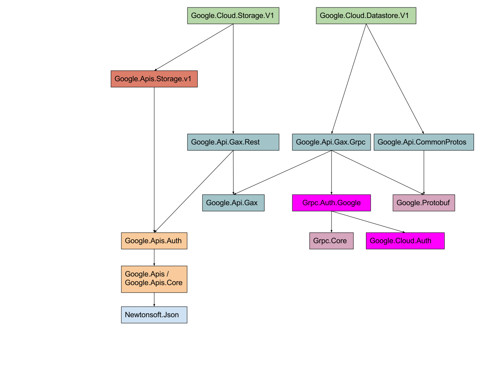

GAX and dependencies
The Google Cloud Libraries for .NET depend on GAX ("Google API Extensions") libraries for common operations and settings. This document describes how the dependencies are changing, and the impact on the Google Cloud Libraries.
Background
Each Google Cloud Library for .NET depends on either
Google.Api.Gax.Rest or Google.Api.Gax.Grpc based on whether
it exposes a REST-only API or a gRPC-enabled API. Each of these
libraries in turn depends on Google.Api.Gax. The overall
dependency tree looks something like this:

In GAX v1, Google.Api.Gax depended on the authentication libraries
from the "Google APIs client library for
.NET". The
result is that installing a single API library involves accepting
dependencies for:
- The library itself (e.g. Google.Cloud.Datastore.V1)
- Google.Api.Gax.Grpc or Google.Api.Gax.Rest
- Google.Api.Gax
- Google.Apis.Auth
- Google.Apis
- Google.Apis.Core
- Newtonsoft.Json
That's a lot of dependencies, including one we don't control (Json.NET). Every dependency is a source of possible pain in terms of version incompatibilities. A particular issue is the "diamond dependency" problem: if your application (A) depends on libraries B and C, and B and C both depend on library D, but depend on different, incompatible versions, this can become intractable.
In GAX v1, a single class (ScopedCredentialProvider) really tied
Google.Api.Gax to Google.Apis.Auth. In hindsight, this class should
have been in Google.Api.Gax.Rest - we didn't think it was a problem,
because we hadn't considered all the possibilities for how to remove
the dependency for gRPC-based APIs, given that Grpc.Auth depends on
Google.Apis.Auth.
We have come up with an alternative plan (see below), but in order
to make that work, we need to move ScopedCredentialProvider to the
right place, which is a breaking change. For that reason, the GAX
libraries will get a major version bump, and all the non-prerelease
libraries that depend on them will too.
Expected final state
In order to remove the dependency between gRPC and
Google.Apis.Auth, we will create two new libraries:
Google.Cloud.Auth: this serves the same purpose asGoogle.Apis.Auth, but with no other dependencies.Grpc.Auth.Google: likeGrpc.Auth, this is just a translation layer, this time betweenGrpc.CoreandGoogle.Cloud.Auth.
Both of these names are very much subject to change - it's just easier to document in some concrete terms.
With those libraries in place, Google.Api.Gax.Grpc can depend on
Grpc.Auth.Google instead of Grpc.Auth, at which point all the
legacy dependencies drop away, and gRPC-based libraries will have a
much smaller and more understandable set of dependencies.
The final dependencies will therefore look like this:

Plan to get there
Getting to the final state without breaking customers is not trivial. In particular, the new auth libraries have not been written yet, and we don't want to rush them. However, we know we need to make the breaking change to GAX, so we want to do that as soon as possible. The start of the plan is (all dates in 2017):
- (Done) Early May: commit the changes to GAX that move
ScopedCredentialProvider, and add dependencies directly from bothGoogle.Api.Gax.RestandGoogle.Api.Gax.GrpctoGoogle.Apis.Auth, bumping the version number to 2.0. Nothing is released to NuGet. - Mid May: Release GAX v2.0.0-beta01 libraries, and immediately release new pre-release versions of all Google Cloud Libraries to refer to them. The previously-released GA libraries (Logging, Datastore, Storage) need to go to 2.0.0-beta01.
- Late May: If all looks well with the pre-releases, release GAX v2 libraries and immediately release new versions of all Google Cloud Libraries to refer to them. This time the previously-GA libraries will be new GA versions; everything else will still be pre-release.
At that point, we have breathing room: everything refers to GAX v2,
and Google.Api.Gax doesn't depend on Google.Apis.Auth or expose
anything from that package. In particular, we can release GA
versions of Google Cloud Libraries which are ready from this point
onwards, without needing to worry about a future major version bump
in the near future.
Note that the breaking change in GAX (moving
ScopedCredentialProvider to a different package) is not expected
to break any user code, as ScopedCredentialProvider is really
aimed at the Google Cloud Libraries code. It's definitely a breaking
change for the Google Cloud Libraries (you wouldn't be able to use a
REST-based library compiled against GAX v1 with GAX v2). Any users
who do explicitly use ScopedCredentialProvider will simply need
to make sure they take a dependency on Google.Api.Gax.Rest, and
import it from its new location.
In the second half of 2017, we hope to work on the new auth libraries. When those are complete, we can create a new minor release of GAX which drops the dependency on the old auth libraries and takes a dependency on the new auth libraries instead.
Taking a new dependency would normally require a major version bump in SemVer. The scenario in which this causes breakage is very unlikely in our case however, particularly because this will be a new package and we certainly don't expect to have multiple major versions of it in the near future. Practically speaking, the best experience for our users will be to make this a minor version bump instead.
Conclusion
Any breaking changes are annoying, but we've decided that it's far better to take the pain now while we only have a small number of GA libraries, leaving a cleaner set of dependencies for the future. It would be much more painful to do this in a year or two, and equally it would be painful to continue with our legacy set of dependencies.
This document hopefully clears up any concerns or questions around why the versions are changing, but if you have any further questions, please file an issue.